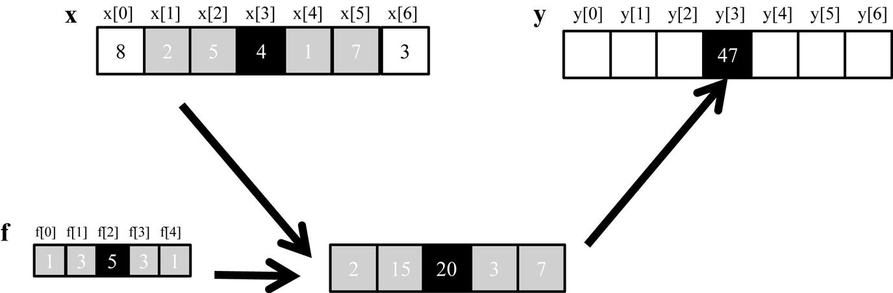
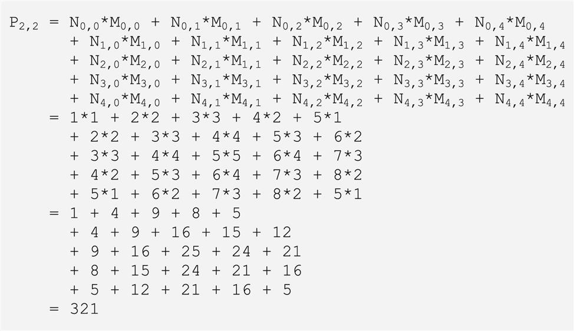
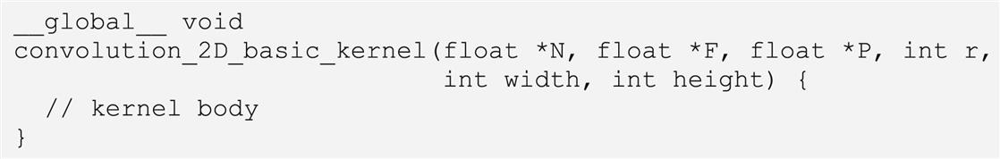
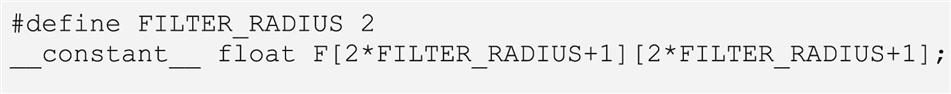
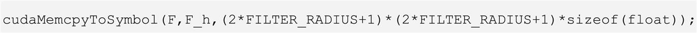
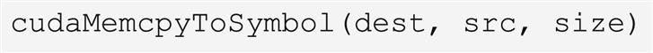
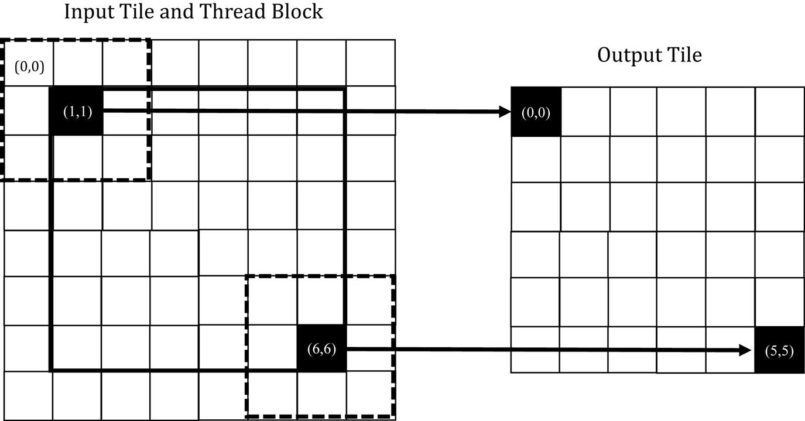
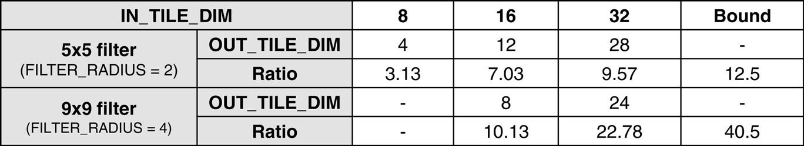
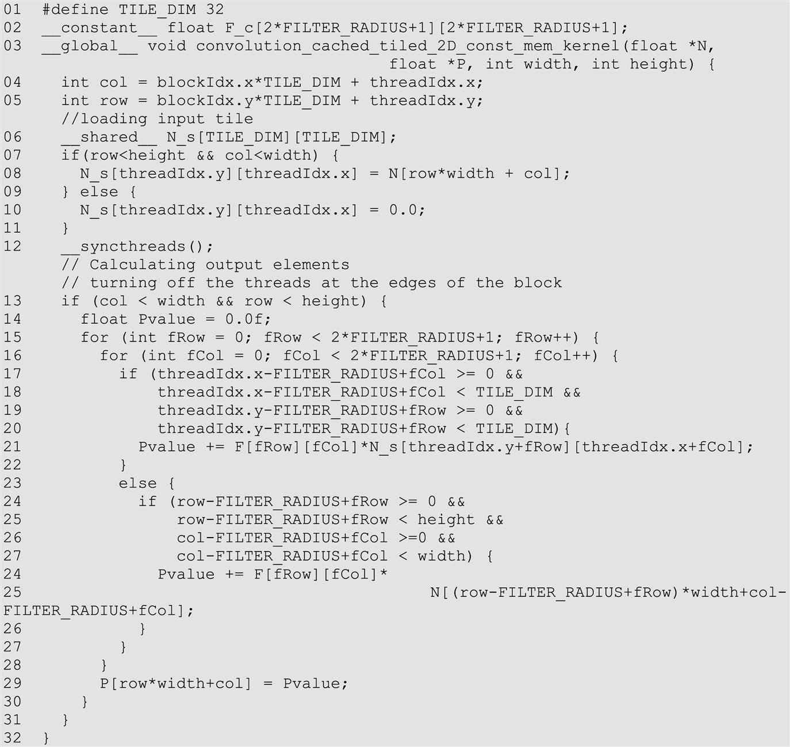

Convolution
An introduction to constant memory and caching
Abstract
This chapter presents convolution as an important parallel computation pattern. While convolution is used in many applications such as computer vision and video processing, it also represents a general pattern that forms the basis of many parallel algorithms. We start with the concept of convolution. We then present a basic parallel convolution algorithm whose execution speed is limited by DRAM bandwidth for accessing both the input and mask elements. We then introduce the constant memory and a simple modification to the kernel and host code to practically eliminate all the DRAM accesses. This is followed by an input tiling kernel that eliminates most of the DRAM accesses for the input elements. We show that the code can be simplified with data caching in more recent devices. We then move into a two-dimensional convolution kernel along with an analysis of the effectiveness of tiling as a function of tile sizes for one- and two-dimensional convolution.
Keywords
Convolution; convolution filters; tiling; ghost cells; halo cells; tiling efficiency; constant memory; constant cache
In the next several chapters we will discuss a set of important patterns of parallel computation. These patterns are the basis of a wide range of parallel algorithms that appear in many parallel applications. We will start with convolution, which is a popular array operation that is used in various forms in signal processing, digital recording, image processing, video processing, and computer vision. In these application areas, convolution is often performed as a filter that transforms signals and pixels into more desirable values. Our image blur kernel is such a filter that smoothes out the signal values so that one can see the big picture trend. For another example, Gaussian filters are convolution filters that can be used to sharpen boundaries and edges of objects in images.
Convolution typically performs a significant number of arithmetic operations to generate each output element. For large datasets such as high-definition images and videos in which there are many output elements (pixels), the amount of computation can be huge. On one hand, each output data element of convolution can be calculated independently of each other, a desirable trait for parallel computing. On the other hand, there is a substantial amount of input data sharing in processing different output data elements with somewhat challenging boundary conditions. This makes convolution an important use case for sophisticated tiling methods and input data staging methods, which are the focus of this chapter.
7.1 Background
Convolution is an array operation in which each output data element is a weighted sum of the corresponding input element and a collection of input elements that are centered on it. The weights that are used in the weighted sum calculation are defined by a filter array, commonly referred to as the convolution kernel. Since there is an unfortunate name conflict between the CUDA kernel functions and convolution kernels, we will refer to these filter arrays as convolution filters to avoid confusion.
Convolution can be performed on input data of different dimensionality: one-dimensional (1D) (e.g., audio), two-dimensional (2D) (e.g., photo), three-dimensional (3D) (e.g., video), and so on. In audio digital signal processing, the input 1D array elements are sampled signal volume over time. That is, the input data element xi is the ith sample of the audio signal volume. A convolution on 1D data, referred to as 1D convolution, is mathematically defined as a function that takes an input data array of n elements [x0, x1, …, xn−1] and a filter array of 2r + 1 elements [f0, f1, …, f2r] and returns an output data array y:
Since the size of the filter is an odd number (, the weighted sum calculation is symmetric around the element that is being calculated. That is, the weighted sum involves  input elements on each side of the position that is being calculated, which is the reason why is referred to as the radius of the filter.
input elements on each side of the position that is being calculated, which is the reason why is referred to as the radius of the filter.
Fig. 7.1 shows a 1D convolution example in which a five-element (r = 2) convolution filter f is applied to a seven-element input array x. We will follow the C language convention by which x and y elements are indexed from 0 to 6 and f elements are indexed from 0 to 4. Since the filter radius is 2, each output element is calculated as the weighted sum of the corresponding input element, two elements on the left, and two elements on the right.
For example, the value of y[2] is generated as the weighted sum of x[0] (i.e., x[2 − 2]) through x[4] (i.e., x[2 + 2]). In this example we arbitrarily assume that the values of the x elements are [8, 2, 5, 4, 1, 7, 3]. The f elements define the weights, whose values are 1, 3, 5, 3, 1 in this example. Each f element is multiplied to the corresponding x element values before the products are summed together. As shown in Fig. 7.1, the calculation for y[2] is as follows:
In Fig. 7.1 the calculation for y[i] can be viewed as an inner product between the subarray of x that starts at x[I − 2] and the f array. Fig. 7.2 shows the calculation for y[3]. The calculation is shifted by one x element from that of Fig. 7.1. That is, the value of y[3] is the weighted sum of x[1] (i.e., x[3 − 2]), through x[5] (i.e., x[3 + 2]). We can think of the calculation for x[3] is as following inner product:

Because convolution is defined in terms of neighboring elements, boundary conditions naturally arise in computing output elements that are close to the ends of an array. As shown in Fig. 7.3, when we calculate y[1], there is only one x element to the left of x[1]. That is, there are not enough x elements to calculate y[1] according to our definition of convolution. A typical approach to handling such boundary conditions is to assign a default value to these missing x elements. For most applications the default value is 0, which is what we use in Fig. 7.3. For example, in audio signal processing, we can assume that the signal volume is 0 before the recording starts and after it ends. In this case, the calculation of y[1] is as follows:
The x element that does not exist in this calculation is illustrated as a dashed box in Fig. 7.3. It should be clear that the calculation of y[0] will involve two missing x elements, both of which will be assumed to be 0 for this example. We leave the calculation of y[0] as an exercise. These missing elements are typically referred to as ghost cells in the literature. There are also other types of ghost cells due to the use of tiling in parallel computation. These ghost cells can have significant impact on the effectiveness and/or efficiency of tiling. We will come back to this point soon.
Also, not all applications assume that the ghost cells contain 0. For example, some applications might assume that the ghost cells contain the same value as the closest valid data element on the edge.
For image processing and computer vision, input data is typically represented as 2D arrays, with pixels in an x–y space. Image convolutions are therefore 2D convolutions, as illustrated in Fig. 7.4. In a 2D convolution the filter f is also a 2D array. Its x and y dimensions determine the range of neighbors to be included in the weighted sum calculation. If we assume that the dimension of the filter is (2rx + 1) in the x dimension and (2ry + 1) in the y dimension, the calculation of each P element can be expressed as follows:
In Fig. 7.4 we use a 5 × 5 filter for simplicity; that is, ry = 2 and rx = 2. In general, the filter does not have to be but is typically a square array. To generate an output element, we take the subarray whose center is at the corresponding location in the input array N. We then perform pairwise multiplication between elements of the filter array and those of the image array. For our example the result is shown as the 5 × 5 product array below N and P in Fig. 7.4. The value of the output element is the sum of all elements of the product array.
The example in Fig. 7.4 shows the calculation of P2,2. For brevity, we will use Ny,x to denote N[y][x] in addressing a C array. Since N and P are most likely dynamically allocated arrays, we will be using linearized indices in our actual code examples. The calculation is as follows:

Like 1D convolution, 2D convolution must also deal with boundary conditions. With boundaries in both the x and y dimensions, there are more complex boundary conditions: The calculation of an output element may involve boundary conditions along a horizontal boundary, a vertical boundary, or both. Fig. 7.5 illustrates the calculation of a P element that involves both boundaries. From Fig. 7.5 the calculation of P1,0 involves two missing columns and one missing row in the subarray of N. As in 1D convolution, different applications assume different default values for these missing N elements. In our example we assume that the default value is 0. These boundary conditions also affect the efficiency of tiling. We will come back to this point soon.
7.2 Parallel convolution: a basic algorithm
The fact that the calculation of all output elements can be done in parallel in a convolution makes convolution an ideal use case for parallel computing. Based on our experience in matrix multiplication, we can quickly write a simple parallel convolution kernel. We will show code examples for 2D convolution, and the reader is encouraged to adapt these code examples to 1D and 3D as exercises. Also, for simplicity we will assume square filters.
The first step is to define the major input parameters for the kernel. We assume that the 2D convolution kernel receives five arguments: a pointer to the input array, N; a pointer to the filter, F; a pointer to the output array, P; the radius of the square filter, r; the width of the input and output arrays, width; and the height of the input and output arrays, height. Thus we have the following setup:

The second step is to determine and implement the mapping of threads to output elements. Since the output array is 2D, a simple and good approach is to organize the threads into a 2D grid and have each thread in the grid calculate one output element. Each block, with up to 1024 threads in a block, can calculate up to 1024 output elements. Fig. 7.6 shows a toy example in which the input and output are 16 × 16 images. We assume in this toy example that each thread block is organized as a 4 × 4 array of threads: four threads in the x dimension and four in the y dimension. The grid in this example is organized as a 4 × 4 array of blocks. The assignment of threads to output elements—output pixels in this example—is simple: Every thread is assigned to calculate an output pixel whose x and y indices are the same as the thread’s x and y indices.
The reader should recognize that the parallelization arrangement in Fig. 7.6 is the same as the ColorToGrayScaleConversion example in Chapter 3, Multidimensional Grids and Data. Therefore we can use the statements in lines 02 and 03 of the kernel in Fig. 7.7 to calculate the output element indices from the block index, block dimension, and thread index for each thread. For example, thread1,1 of block1,1 is mapped to output element P[1*4+1][1*4+1]=P[5][5], which is marked as a green square in Fig. 7.6.
Once we have determined the output element indices for each thread, we can identify the input N elements that are needed for calculating the output element. As illustrated in Fig. 7.6, the calculation of P[5][5] (green square) by thread1, 1 of block1, 1 will use the input elements whose x indices range from outCol - r=3 to outCol + r=7 and whose y indices range from outRow - r=3 to outRow + r=7. For all threads, outCol - r and outRow - r define the upper-left corner (heavily shaded square) of the patch of input elements (lightly shaded area) needed for P[outRow][outCol]. Therefore we can use a doubly nested loop to iterate through all these index values and perform this calculation (lines 05–13 of Fig. 7.7).
The register variable Pvalue will accumulate all intermediate results to save DRAM bandwidth. The if-statement in the inner for-loop tests whether any of the input N elements that are used are ghost cells on the left, right, top, or bottom side of the N array. Since we assume that 0 values will be used for ghost cells, we can simply skip the multiplication and accumulation of the ghost cell element and its corresponding filter element. After the end of the loop, we release the Pvalue into the output P element (line 14).
We make two observations on the kernel in Fig. 7.7. First, there will be control flow divergence. The threads that calculate the output elements near the four edges of the P array will need to handle ghost cells. As we showed in Section 7.1, each of these threads will encounter a different number of ghost cells. Therefore they will all be somewhat different decisions in the if-statement (line 09). The thread that calculates P[0][0] will skip the multiply-accumulate statement most of the time, whereas the one that calculates P[0][1] will skip fewer times, and so on. The cost of control divergence will depend on the value of width and height of the input array and the radius of the filter. For large input arrays and small filters, control divergence occurs only in computing a small portion of the output elements, which will keep the effect of control divergence small. Since convolution is often applied to large images, we expect the effect of control divergence to range from modest to insignificant.
A more serious problem is memory bandwidth. The ratio of floating-point arithmetic calculation to global memory accesses is only about 0.25 OP/B (2 operations for every 8 bytes loaded on line 10). As we saw in the matrix multiplication example, this simple kernel can be expected to run only at a tiny fraction of the peak performance. We will discuss two key techniques for reducing the number of global memory accesses in the next two sections.
7.3 Constant memory and caching
There are three interesting properties in the way the filter array F is used in convolution. First, the size of F is typically small; the radius of most convolution filters is 7 or smaller. Even in 3D convolution the filter typically contains only less than or equal to 73 = 343 elements. Second, the contents of F do not change throughout the execution of the convolution kernel. Third, all threads access the filter elements. Even better, all threads access the F elements in the same order, starting from F[0][0] and moving by one element at a time through the iterations of the doubly nested for-loop in Fig. 7.7. These three properties make the filter an excellent candidate for constant memory and caching (Fig. 7.8).
As we discussed in Chapter 5, Memory Architecture and Data Locality (Table 5.1), the CUDA C allows programmers to declare variables to reside in the constant memory. Like global memory variables, constant memory variables are visible to all thread blocks. The main difference is that the value of a constant memory variable cannot be modified by threads during kernel execution. Furthermore, the size of the constant memory is quite small, currently at 64 KB.
To use constant memory, the host code needs to allocate and copy constant memory variables in a different way than global memory variables. We assume that the radius of the filter is specified in the compile-time constant FILTER_RADIUS. To declare an F array in constant memory, the host code declares it a global variable as follows:

Note that this is a global variable declaration and should be outside any function in the source file. The keyword __constant__ (two underscores on each side) tells the compiler that array F should be placed into the device constant memory.
Assume that the host code has already allocated and initialized the mask in a filter F_h array in the host memory with (2*FILTER_RADIUS+1)2 elements. The contents of the F_h can be transferred from the host memory to F in the device constant memory as follows:

Note that this is a special memory copy function that informs the CUDA runtime that the data being copied into the constant memory will not be changed during kernel execution. In general, the use of cudaMemcpyToSymble() function is as follows:

where dest is a pointer to the destination location in the constant memory, src is a pointer to the source data in the host memory, and size is the number of bytes to be copied.1
Kernel functions access constant memory variables as global variables. Therefore their pointers do not need to be passed to the kernel as arguments. We can revise our kernel to use the constant memory as shown in Fig. 7.9. Note that the kernel looks almost identical to that in Fig. 7.7. The only difference is that F is no longer accessed through a pointer that is passed in as a parameter. It is now accessed as a global variable. Keep in mind that all the C language scoping rules for global variables apply here. If the host code and kernel code are in different files, the kernel code file must include the relevant external declaration information to ensure that the declaration of F is visible to the kernel.
Like global memory variables, constant memory variables are also located in DRAM. However, because the CUDA runtime knows that constant memory variables are not modified during kernel execution, it directs the hardware to aggressively cache the constant memory variables during kernel execution. To understand the benefit of constant memory usage, we need to first understand more about modern processor memory and cache hierarchies.
As we discussed in Chapter 6, Performance Considerations, the long latency and limited bandwidth of DRAM form a bottleneck in virtually all modern processors. To mitigate the effect of this memory bottleneck, modern processors commonly employ on-chip cache memories, or caches, to reduce the number of variables that need to be accessed from the main memory (DRAM), as shown in Fig. 7.10.
Unlike the CUDA shared memory, or scratchpad memories in general, caches are “transparent” to programs. That is, to use CUDA shared memory to hold the value of a global variable, a program needs to declare variables as __shared__ and explicitly copy the value of the global memory variable into the shared memory variable. On the other hand, in using caches, the program simply accesses the original global memory variables. The processor hardware will automatically retain the most recently or frequently used variables in the cache and remember their original global memory address. When one of the retained variables is used later, the hardware will detect from their addresses that a copy of the variable is available in cache. The value of the variable will then be served from the cache, eliminating the need to access DRAM.
There is a tradeoff between the size of a memory and the speed of a memory. As a result, modern processors often employ multiple levels of caches. The numbering convention for these cache levels reflects the distance to the processor. The lowest level, L1 or level 1, is the cache that is directly attached to a processor core, as shown in Fig. 7.10. It runs at a speed close to that of the processor in both latency and bandwidth. However, an L1 cache is small, typically between 16 and 64 KB in capacity. L2 caches are larger, in the range of a few hundred kilobytes to a small number of MBs but can take tens of cycles to access. They are typically shared among multiple processor cores, or streaming multiprocessors (SMs) in a CUDA device, so the access bandwidth is shared among SMs. In some high-end processors today, there are even L3 caches that can be of hundreds of megabytes in size.
Constant memory variables play an interesting role in designing and using memories in massively parallel processors. Since these constant memory variables are not modified during kernel execution, there is no need to support writes by threads when caching them in an SM. Supporting high-throughput writes into a general cache requires sophisticated hardware logic and is costly in terms of chip area and power consumption. Without the need for supporting writes, a specialized cache for constant memory variables can be designed in a highly efficient manner in terms of chip area and power consumption. Furthermore, since the constant memory is quite small (64 KB), a small, specialized cache can be highly effective in capturing the heavily used constant memory variables for each kernel. This specialized cache is called a constant cache in modern GPUs. As a result, when all threads in a warp access the same constant memory variable, as is the case of F in Fig. 7.9, where the indices for accessing F are independent of the thread indices, the constant caches can provide a tremendous amount of bandwidth to satisfy the data needs of these threads. Also, since the size of F is typically small, we can assume that all F elements are effectively always accessed from the constant cache. Therefore we can simply assume that no DRAM bandwidth is spent on accesses to the F elements. With the use of constant memory and caching, we have effectively doubled the ratio of floating-point arithmetic to memory access to around 0.5 OP/B (2 operations for every 4 bytes loaded on line 10).
As it turns out, the accesses to the input N array elements can also benefit from caching. We will come back to this point in Section 7.5.
7.4 Tiled convolution with halo cells
We can address the memory bandwidth bottleneck of convolution with a tiled convolution algorithm. Recall that in a tiled algorithm, threads collaborate to load input elements into an on-chip memory for subsequent use of these elements. We will first establish the definitions of input and output tiles, since these definitions are important for understanding the design of the algorithm. We will refer to the collection of output elements processed by each block as an output tile. Recall that Fig. 7.6 shows a toy example of a 16 × 16 2D convolution using 16 blocks of 16 threads each. In that example there are 16 output tiles. Keep in mind that we use 16 threads per block to keep the example small. In practice, there should be at least 32 threads, or one warp, per block and typically many more to achieve good occupancy and data reuse. From this point on, we will assume that the F elements are in the constant memory.
We define an input tile as the collection of input N elements that are needed to calculate the P elements in an output tile. Fig. 7.11 shows the input tile (the shaded patch on the left side) that corresponds to an output tile (the shaded patch on the right side). Note that the dimensions of the input tile need to be extended by the radius of the filter (2 in this example) in each direction to ensure that it includes all the halo input elements that are needed for calculating the P elements at the edges of the output tile. This extension can make the input tiles significantly larger than output tiles. In this toy example, each output tile consists of 42 = 16 P-elements, whereas each input tile consists of (4 + 4)2 = 82 = 64 elements. In this case, the input tiles are 4× larger than the output tiles. However, this large ratio is because we assume a tiny output tile dimension for ease of visualization in the toy example. In practice, the output tile dimensions would be much larger, and the ratio between input tile size and output tile size would be closer to 1.0. For example, if the output size is 16 × 16 = 256, with the same 5 × 5 filter, the input tile size would be (16 + 4)2 = 400. The ratio between the input tile size and the output size would be about 1.6. Although this ratio is much less than 4, it shows that the input tile size can still be significantly larger than output tiles even for practical output tile dimensions.
In this section we present a class of tiled convolution algorithms in which all threads in a block first collaboratively load the input tile into the shared memory before they calculate the elements of the output tile by accessing the input elements from the shared memory. This should sound familiar to the reader; the strategy resembles that of the tiled matrix multiplication algorithms that were discussed in Chapter 5, Memory Architecture and Data Locality. The main difference is that the tiled matrix multiplication algorithms in Chapter 5, Memory Architecture and Data Locality, assume that the input tiles are of the same dimension as the output tiles, whereas the convolution input tiles are larger than the output tiles. This difference between input tile size and output tile size complicates the design of tiled convolution kernels.
There are two simple thread organizations for addressing the discrepancy between the input tile size and the output tile size. The first one launches thread blocks whose dimension matches that of the input tiles. This simplifies the loading of the input tiles, as each thread needs to load just one input element. However, since the block dimension is larger than that of the output tile, some of the threads need to be disabled during the calculation of output elements, which can reduce the efficiency of execution resource utilization. The second approach launches blocks whose dimension matches that of the output tiles. On one hand, this second strategy makes the input tile loading more complex, as the threads need to iterate to ensure that all input tile elements are loaded. On the other hand, it simplifies the calculation of the output elements, since the dimension of the block is the same as the output tile, and there is no need to disable any threads during the calculation of output elements. We will present the design of a kernel based on the first thread organization and leave the second organization as an exercise.
Fig. 7.12 shows a kernel that is based on the first thread organization. Each thread first calculates the column index (col) and row index (row) of the input or output element that it is responsible for loading or computing (lines 06–07). The kernel allocates a shared memory array N_s whose size is the same as an input tile (line 09) and loads the input tile to the shared memory array (lines 10–15). The conditions in line 10 are used by each thread to check whether the input tile element that it is attempting to load is a ghost cell. If so, the thread does not perform a memory load. Rather, it places a zero into the shared memory. All threads perform a barrier synchronization (line 15) to ensure that the entire input tile is in place in the shared memory before any thread is allowed to proceed with the calculation of output elements.
Now that all the input tile elements are in the N_ds array, each thread can calculate their output P element value using the N_ds elements. Keep in mind that the output tile is smaller than the input tile and that the blocks are of the same size as the input tiles, so only a subset of the threads in each block will be used to calculate the output tile elements. There are multiple ways in which we can select the threads for this calculation. We use a design that deactivates FILTER_RADIUS exterior layers of threads, as illustrated in Fig. 7.13.

Fig. 7.13 shows a small example of convolution using a 3 × 3 filter (FILTER_RADIUS=1), 8 × 8 input tiles, 8 × 8 blocks, and 6 × 6 output tiles. The left side of Fig. 7.13 shows the input tile and the thread block. Since they are of the same size, they are overlaid on top of each other. With our design, we deactivate FILTER_RADIUS=1 exterior layer of threads. The heavy-line box at the center of the left side of Fig. 7.13 encloses the active threads for calculating the output tile elements. In this example the threadIdx.x and threadIdx.y values of the active threads both range from 1 to 6.
Fig. 7.13 also shows the mapping of the active threads to the output tile elements: Active thread (tx, ty) will calculate output element (tx - FILTER_RADIUS, ty - FILTER_RADIUS) using a patch of input tile elements whose upper-left corner is element (tx - FILTER_RADIUS, ty - FILTER_RADIUS) of the input tile. This is reflected in lines 17–18 of Fig. 7.12, where the column index (tileCol) and row index (tileRow) are assigned threadIdx.x-FILTER_RADIUS and threadId.y-FILTER_RADIUS, respectively.
In our small example in Fig. 7.13, tileCol and tileRow of thread (1,1) receive 0 and 0, respectively. Thus thread (1, 1) calculates element (0,0) of the output tile using the 3 × 3 patch of input tile elements highlighted with the dashed box at the upper-left corner of the input tile. The fRow-fCol loop nest on lines 24–28 of Fig. 7.12 iterates through the patch and generates the output element. Thread (1,1) in the block will iterate through the patch whose upper-left corner is N_s[0][0], whereas thread (5,5) will iterate through the patch whose upper-left corner is N_s[5][5].
In lines 06–07, blockIdx.x*OUT_TILE_DIM and blockIdx.y*OUT_TILE_DIM are the horizontal and vertical P array indices, respectively, of the beginning of the output tile assigned to the block. As we discussed earlier, threadIdx.x-r and threadIdx.y-r give the offset into the tile. Thus the row and the col variables provide the index of the output element assigned to each active thread. Each thread uses these two indices to write the final value of the output element in line 29.
The tiled 2D convolution kernel in Fig. 7.12 is significantly longer and more complex than the basic kernel in Fig. 7.9. We introduced the additional complexity to reduce the number of DRAM accesses for the N elements. The goal is to improve the arithmetic-to-global memory access ratio so that the achieved performance is not limited or less limited by the DRAM bandwidth. Recall from Section 7.4 that the arithmetic-to-global memory access ratio of the kernel in Fig. 7.9 is 0.5 OP/B. Let us now derive this ratio for the kernel in Fig. 7.12.
For the blocks that handle tiles at the edges of the data, the threads that handle ghost cells do not perform any memory access for these ghost cells. This reduces the number of memory accesses for these blocks. We can calculate the reduced number of memory accesses by enumerating the number of threads that use each ghost cell. However, it should be clear that for large input arrays, the effect of ghost cells for small mask sizes will be insignificant. Therefore we will ignore the effect of ghost cells when we calculate the arithmetic-to-global memory access ratio in tiled convolution kernels and consider only the internal thread blocks whose halo cells are not ghost cells.
We now calculate the arithmetic-to-global memory access ratio for the tiled kernel in Fig. 7.12. Every thread that is assigned to an output tile element performs one multiplication and one addition for every element of the filter. Therefore the threads in an internal block collectively perform OUT_TILE_DIM2*(2*FILTER_RADIUS + 1)2*2 arithmetic operations. As for the global memory accesses, all the global memory accesses have been shifted to the code that loads the N elements into the shared memory. Each thread that is assigned to an input tile element loads one 4-byte input value. Therefore IN_TILE_DIM2*4=(OUT_TILE_DIM+2*FILTER_RADIUS)2*4 bytes are loaded by each internal block. Therefore the arithmetic-to-global memory access ratio for the tiled kernel is
For our example with a 5 × 5 filter and 32 × 32 input tiles (28 × 28 output tiles), the ratio is . An input tile size of 32 × 32 is the largest that is achievable on current GPUs. However, we can perform an asymptotic analysis on the tile size to get an upper bound on the arithmetic-to-global memory access ratio that is achievable for this computation. If OUT_TILE_DIM is much larger than FILTER_RADIUS, we can consider OUT_TILE_DIM+2*FILTER_RADIUS to be approximately OUT_TILE_DIM. This simplifies the expression to (2*FILTER_RADIUS+1)2*2/4. This should be quite an intuitive result. In the original algorithm, each N element is redundantly loaded by approximately (2*FILTER_RADIUS+1)2 threads, each of which performs two arithmetic operations with it. Thus if the tile size is infinitely large and each 4-byte element is loaded only into the shared memory once, the ratio should be (2*FILTER_RADIUS+1)2*2/4.
Fig. 7.14 shows how the arithmetic-to-global memory access ratio of the tiled convolution kernel for different filter sizes varies with tile dimension, including an asymptotic bound. The bound on the ratio with a 5 × 5 filter is 12.5 OP/B. However, the ratio that is actually achievable with the 32 × 32 limit on thread block size is 9.57 OP/B. For a larger filter, such as 9 × 9 in the bottom row of Fig. 7.14, the bound on the ratio is 40.5 OP/B. However, the ratio that is actually achievable with the 32 × 32 limit on thread block size is 22.78 OP/B. Therefore we observe that a larger filter size has a higher ratio because each input element is used by more threads. However, the larger filter size also has a higher disparity between the bound and the ratio that is actually achieved because of the larger number of halo elements that force a smaller output tile.

The reader should always be careful when using small block and tile sizes. They may result in significantly less reduction in memory accesses than expected. For example, in Figs. 7.14, 7.8 × 8 blocks (input tiles) result in only a ratio of 3.13 OP/B for 5 × 5 filters. In practice, smaller tile sizes are often used because of an insufficient amount of on-chip memory, especially in 3D convolution, in which the amount of on-chip memory that is needed grows quickly with the dimension of the tile.
7.5 Tiled convolution using caches for halo cells
In Fig. 7.12, much of the complexity of the code has to do with the fact that the input tiles and blocks are larger than the output tiles because of the loading of halo cells. Recall that the halo cells of an input tile of a block are also the internal elements of neighboring tiles. For example, in Fig. 7.11 the lightly shaded halo cells of an input tile are also internal elements of the input tiles of neighboring blocks. There is a significant probability that by the time a block needs its halo cells, they are already in L2 cache because of the accesses by its neighboring blocks. As a result, the memory accesses to these halo cells may be naturally served from L2 cache without causing additional DRAM traffic. That is, we can leave the accesses to these halo cells in the original N elements rather than loading them into the N_ds. We now present a tiled convolution algorithm that uses the same dimension for input and output tiles and loads only the internal elements of each tile into the shared memory.
Fig. 7.15 shows a 2D convolution kernel using caching for halo cells. In this tiled kernel, the shared memory N_ds array needs to hold only the internal elements of the tile. Thus the input tiles and output tiles are of the same dimension, which is defined as constant TILE_DIM (line 1). With this simplification, N_s is declared to have TILE_DIM elements in both x and y dimensions (line 6).

Because the input tiles and output tiles are of the same size, the thread blocks can be launched with the same size of the input/output tiles. Loading of the N_s elements becomes simpler, since each thread can simply load the input element that has the same x and y coordinates as its assigned output element (lines 4–5 and 7–11). The condition for loading an input element is also simplified in line 7: Because the kernel no longer loads halo cells into shared memory, there is no danger of loading ghost cells. Thus the condition needs to check only for the usual boundary condition that a tile may extend beyond the valid range of the input data.
However, the body of the loop that calculates P elements becomes more complex. It needs to add conditions to check for use of both halo cells and ghost cells. The handling of halo cells is done with the conditions in lines 17–20, which tests whether the input element falls within the interior of the input tile. If so, the element is accessed from the shared memory. If not, the conditions in lines 24–27 check whether the halo cells are ghost cells. If so, no action is taken for the element, since we assume that the ghost values are 0. Otherwise, the element is accessed from the global memory. The reader should verify that the conditions for handling the ghost cells are similar to those used in Fig. 7.7.
A subtle advantage of the kernel in Fig. 7.15 compared to the kernel in Fig. 7.12 is that its block size, input tile size, and output tile size can be the same and can be a power of 2. Because the input tile size and output tile size are different for the kernel in Fig. 7.12, there is likely more memory divergence and control divergence during the execution of that kernel.
7.6 Summary
In this chapter we have studied convolution as an important parallel computation pattern. While convolution is used in many applications, such as computer vision and video processing, it also represents a general pattern that forms the basis of many parallel algorithms. For example, one can view the stencil algorithms in partial differential equation solvers as a special case of convolution; this will be the subject of Chapter 8, Stencil. For another example, one can also view the calculation of grid point force or potential value as a special case of convolution, which will be presented in Chapter 17, Iterative Magnetic Resonance Imaging Reconstruction. We will also apply much of what we learned in this chapter on convolutional neural networks in Chapter 16, Deep Learning.
We presented a basic parallel convolution algorithm whose implementation will be limited by DRAM bandwidth for accessing both the input and filter elements. We then introduced constant memory and a simple modification to the kernel and host code to take advantage of constant caching and eliminate practically all DRAM accesses for the filter elements. We further introduced a tiled parallel convolution algorithm that reduces DRAM bandwidth consumption by leveraging the shared memory while introducing more control flow divergence and programming complexity. Finally, we presented a tiled parallel convolution algorithm that takes advantage of the L1 and L2 caches for handling halo cells.
We presented an analysis of the benefit of tiling in terms of elevated arithmetic-to-global memory access ratio. The analysis is an important skill and will be useful in understanding the benefit of tiling for other patterns. Through the analysis we can learn about the limitation of small tile sizes, which is especially pronounced for large filters and 3D convolutions.
Although we have shown kernel examples for only 1D and 2D convolutions, the techniques are directly applicable to 3D convolutions as well. In general, the index calculation for the input and output arrays are more complex, owing to higher dimensionality. Also, one will have more loop nesting for each thread, since multiple dimensions need to be traversed in loading tiles and/or calculating output values. We encourage the reader to complete these higher-dimension kernels as homework exercises.
Exercises
- 1. Calculate the P[0] value in Fig. 7.3.
- 2. Consider performing a 1D convolution on array N = {4,1,3,2,3} with filter F = {2,1,4}. What is the resulting output array?
- 3. What do you think the following 1D convolution filters are doing?
- 4. Consider performing a 1D convolution on an array of size N with a filter of size M:
- 5. Consider performing a 2D convolution on a square matrix of size N × N with a square filter of size M × M:
- 6. Consider performing a 2D convolution on a rectangular matrix of size N1 × N2 with a rectangular mask of size M1 × M2:
- 7. Consider performing a 2D tiled convolution with the kernel shown in Fig. 7.12 on an array of size N × N with a filter of size M × M using an output tile of size T × T.
- a. How many thread blocks are needed?
- b. How many threads are needed per block?
- c. How much shared memory is needed per block?
- d. Repeat the same questions if you were using the kernel in Fig. 7.15.
- 8. Revise the 2D kernel in Fig. 7.7 to perform 3D convolution.
- 9. Revise the 2D kernel in Fig. 7.9 to perform 3D convolution.
- 10. Revise the tiled 2D kernel in Fig. 7.12 to perform 3D convolution.